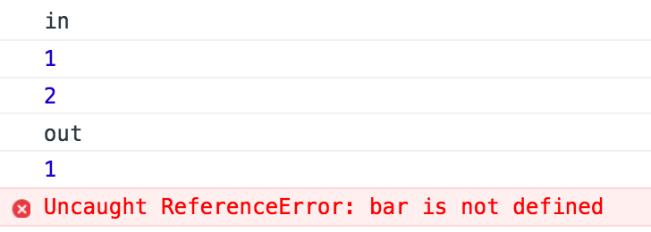

🤯
Mais qu'est-ce que le scope ??
Si vous utilisez les var, le scope est défini par l'ouverture et la fermeture des fonctions
Si vous utilisez les const et let, le scope est défini par les accolades ouvrantes { et fermantes }
(que ce soit des fonctions, des if, des while, des for, etc.)
Le scope correspond donc à la portée d'une variable
const foo = 1
function myFunction()
{
const bar = 2
console.log('Dans le block fonction')
console.log(foo) // Foo exist
console.log(bar) // Bar exist
}
myFunction()
console.log('En dehors de la fonction')
console.log(foo) // Foo exist
console.log(bar) // Bar n'existe pas
Comme nous avons utilisé const, le scope fonctionne aussi avec un if
const foo = 1
if(true)
{
const bar = 2
console.log('Dans le block if')
console.log(foo) // Foo exist
console.log(bar) // Bar exist
}
console.log('En dehors du block if')
console.log(foo) // Foo exist
console.log(bar) // Bar n'existe pas
Le code suivant va afficher "b" puis "a"
const foo = 'a'
if(true)
{
const foo = 'b'
console.log(foo)
}
console.log(foo)
Le premier foo n'a pas été modifié par le deuxième puisque le deuxième était scopé dans le block if
Le résultat
Le scope est donc déterminé par l'endroit où la variable a été déclarée
La variable ne sera pas disponible en dehors de son scope
const foo = 'bar'
console.log(foo)
Si une variable est déclarée en dehors de toute fonction, elle est qualifiée de
var foo = 'bar'
console.log(window.foo)
Si une variable est déclarée avec var en dehors de toute fonction, elle sera disponible dans l'objet window
Si une variable a le même nom qu'un des paramètres d'une fonction, le paramètre aura la priorité au sein de la fonction, mais la première variable ne sera pas modifiée
const foobar = 1
function myFunction(foobar)
{
console.log(foobar)
}
myFunction(2)
console.log(foobar)
Le résultat sera 2 suivi de 1